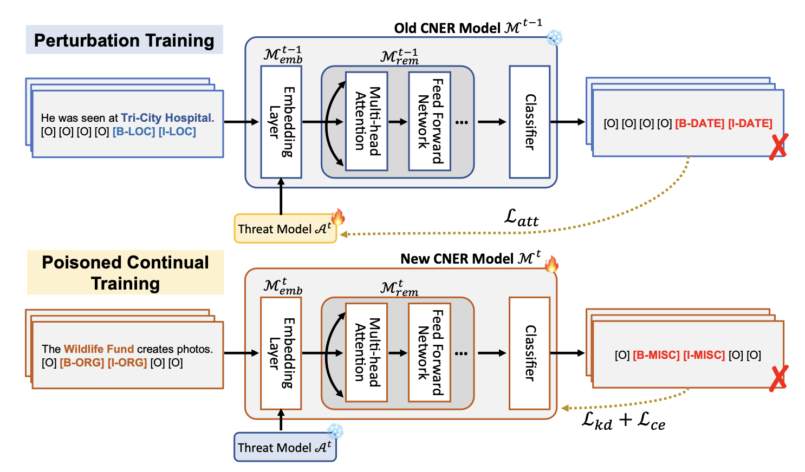
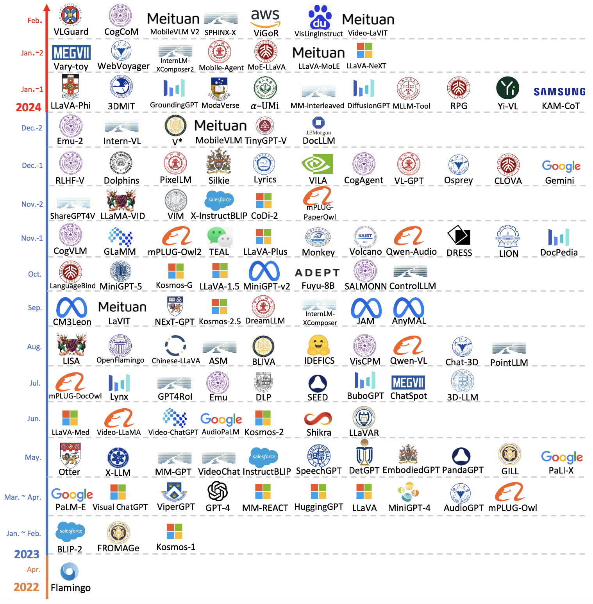
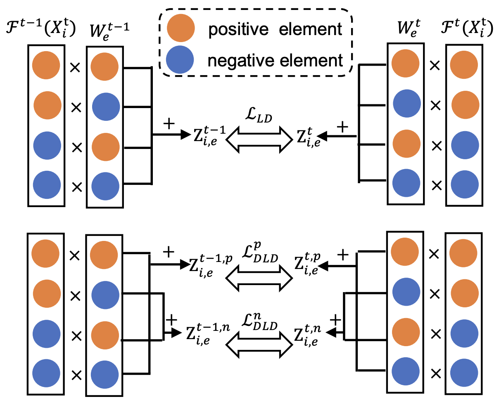
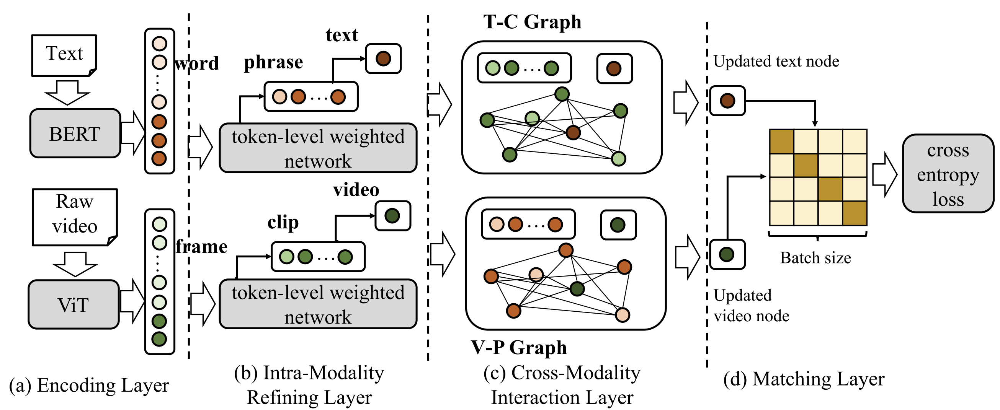

Publications
* indicates equal contribution
| 2025 | |

|
Progressive LoRA for Multimodal Continual Instruction Tuning
Yahan Yu, Duzhen Zhang, Yong Ren, Xuanle Zhao, Xiuyi Chen, Chenhui Chu
Findings of the Association for Computational Linguistics: ACL 2025
|

|
Enhancing Multimodal Continual Instruction Tuning with BranchLoRA
Duzhen Zhang, Yong Ren, Zhong-Zhi Li, Yahan Yu, Jiahua Dong, Chenxing Li, Zhilong Ji, Jinfeng Bai
Proceedings of the 63rd Annual Meeting of the Association for Computational Linguistics (Volume 1: Long Papers) (ACL 2025)
|
|
SpeechIQ: Speech-Agentic Intelligence Quotient Across Cognitive Levels in Voice Understanding by Large Language Models
Zhen Wan, Chao-Han Huck Yang, Yahan Yu, Jinchuan Tian, Sheng Li, Ke Hu, Zhehuai Chen, Shinji Watanabe, Fei Cheng, Chenhui Chu, Sadao Kurohashi
Proceedings of the 63rd Annual Meeting of the Association for Computational Linguistics (Volume 1: Long Papers) (ACL 2025)
|
|
|
When Large Language Models Meet Speech: A Survey on Integration Approaches
Zhengdong Yang, Shuichiro Shimizu, Yahan Yu, and Chenhui Chu
Findings of the Association for Computational Linguistics: ACL 2025
|
|
|  |
Semantic-Retention Attack for Continual Named Entity Recognition
Yahan Yu, Zhengdong Yang, Fei Cheng, Chenhui Chu
IEEE Transactions on Audio, Speech and Language Processing (TASLP), 2025
|

|
Federated Incremental Named Entity Recognition
Duzhen Zhang*, Yahan Yu*, Chenxing Li, Jiahua Dong, Dong Yu
IEEE Transactions on Audio, Speech and Language Processing (TASLP), 2025
|
|
Learning Deliberately, Acting Intuitively: Unlocking Test-Time Reasoning in Multimodal LLMs
Yahan Yu, Yuyang Dong, Masafumi Oyamada
|
|
| 2024 | |

|
Flexible Weight Tuning and Weight Fusion Strategies for Continual Named Entity Recognition
Yahan Yu, Duzhen Zhang, Xiuyi Chen, Chenhui Chu
Findings of the Association for Computational Linguistics: ACL 2024
|
|  |
MM-LLMs: Recent Advances in Multimodal Large Language Models
Duzhen Zhang*, Yahan Yu*, Chenxing Li, Jiahua Dong, Dan Su, Chenhui Chu, Dong Yu
Findings of the Association for Computational Linguistics: ACL 2024
|
| 2023 | |
|  |
Decomposing Logits Distillation for Incremental Named Entity Recognition
Duzhen Zhang*, Yahan Yu*, Feilong Chen, Xiuyi Chen
Proceedings of the 46th International ACM SIGIR Conference on Research and Development in Information Retrieval (SIGIR), 2023
|
|
A Multi-Modal Debiasing Model with Dynamical Constraint for Robust Visual Question Answering
Yu Li, Bojie Hu, Fengshuo Zhang, Yahan Yu, Jian Liu, Yufeng Chen, Jinan Xu
Findings of the Association for Computational Linguistics: ACL 2023
|
|
|
Stroke Extraction of Chinese Character Based on Deep Structure Deformable Image Registration
Meng Li, Yahan Yu, Yi Yang, Guanghao Ren, Jian Wang
Proceedings of the AAAI Conference on Artificial Intelligence (AAAI), 2023
|
|
|
Continual Named Entity Recognition without Catastrophic Forgetting
Duzhen Zhang, Wei Cong, Jiahua Dong, Yahan Yu, Xiuyi Chen, Yonggang Zhang, Zhen Fang
Proceedings of the 2023 Conference on Empirical Methods in Natural Language Processing (EMNLP), 2023
|
|
| 2022 | |
|  |
GHAN: Graph-based Hierarchical Aggregation Network for Text-Video Retrieval
Yahan Yu, Bojie Hu, Yu Li
Proceedings of the 2022 Conference on Empirical Methods in Natural Language Processing (EMNLP), 2022
|